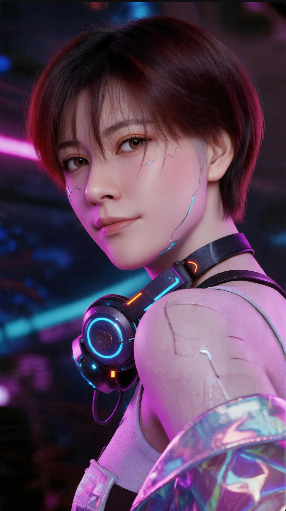

VISUAL DESIGN
视觉设计
01 — SELECTED WORK
从视觉系统到动态角色，再到可交互的网页界面。这是一组持续更新的跨媒介创作练习。

PORTRAIT / 0102 — ABOUT
VISUAL DESIGNER · DIGITAL MEDIA ARTIST · EDUCATOR
视觉设计师 · 数字媒体艺术创作者 · 教育工作者
我是一名独立视觉设计师，同时也是一名高职院校教师。
我的创作与实践游走于视觉设计、数字媒体艺术与建筑动画之间，关注视觉语言、空间、动态影像与数字技术如何共同塑造新的观看与表达方式。
作为设计师，我喜欢在秩序与实验之间寻找平衡，将想法转化为具有清晰视觉逻辑与独特感知体验的作品。
作为教育者，我教授并持续研究数字媒体艺术与建筑动画相关领域。教学也成为我重新理解设计的一种方式——在创作、技术与知识分享之间建立新的连接。
03 — PRACTICE
视觉设计、数字媒体艺术、建筑可视化与设计教育，是我持续创作的四个方向。欢迎委托、合作或交流。
视觉设计
数字媒体艺术
建筑可视化 / 建筑动画
设计教育
CONTACT / 联系方式
如果你有项目想法、内容需求或教学合作，欢迎直接联系我。
设计，是理解世界的一种方式。